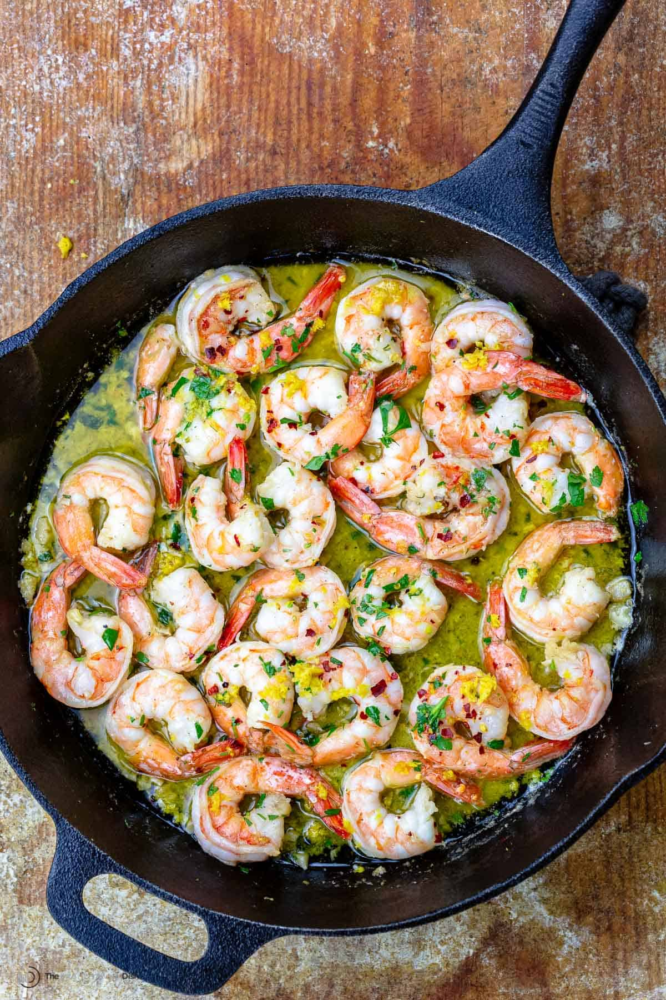

Quick and easy recipe that will have you feeling like you're sipping wine and slurping noodles under the Tuscan sun on Tuesday in Milwaukee
Step 1
Heat olive oil and 2 tablespoons of butter in a large pan or skillet. Add garlic and sauté until fragrant (about 30 seconds - 1 minute). Then add the shrimp, season with salt and pepper to taste and sauté for 1-2 minutes on one side (until just beginning to turn pink), then flip.
Step 2
Pour in wine (or broth), add red pepper flakes (if using). Bring to a simmer for 1-2 minutes or until wine reduces by about half and the shrimp is cooked through (don't over cook your shrimp).
Step 3
Stir in the remaining butter, lemon juice and parsley and take off heat immediately.
Step 4
Serve over rice, pasta, garlic bread or steamed vegetables (cauliflower, broccoli, zucchini noodles).